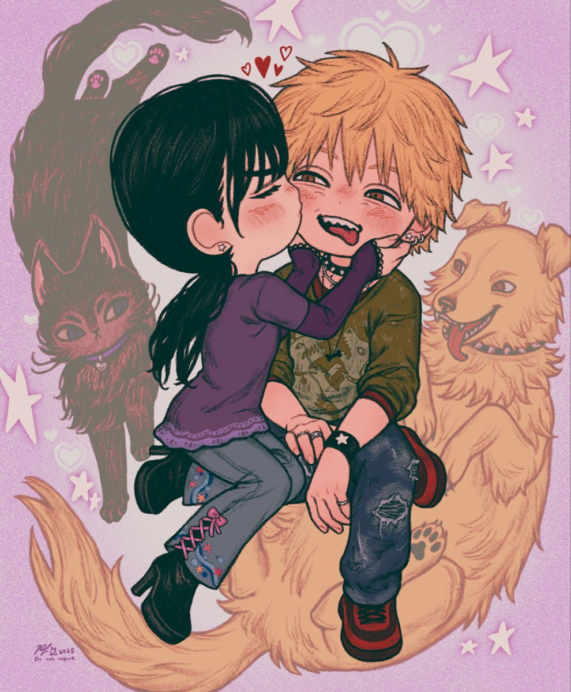
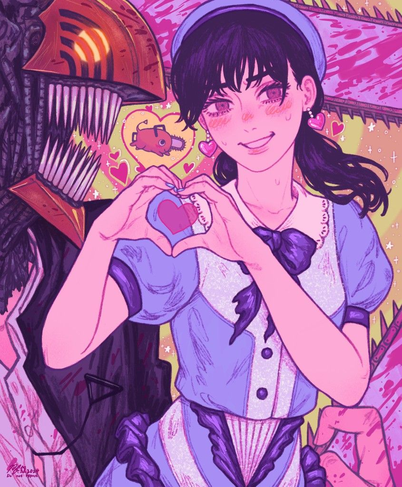
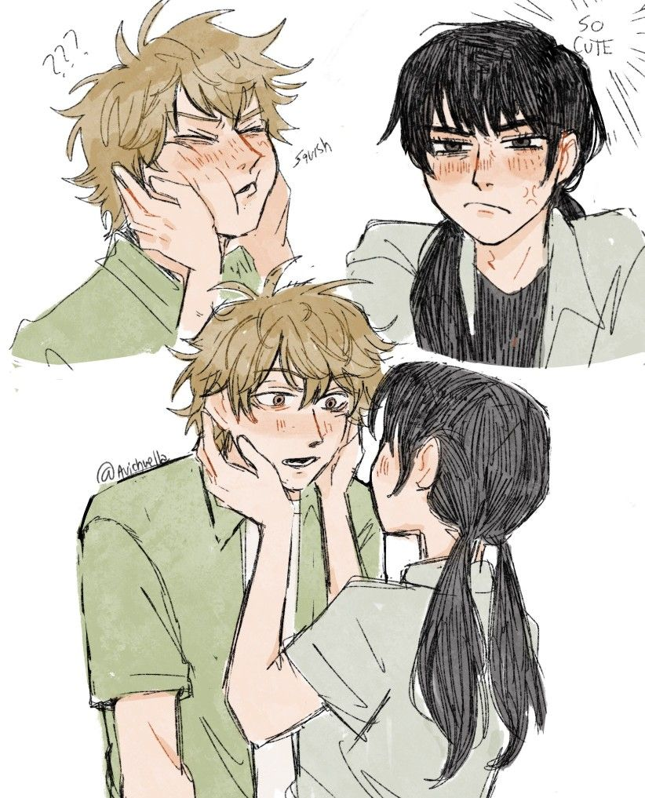
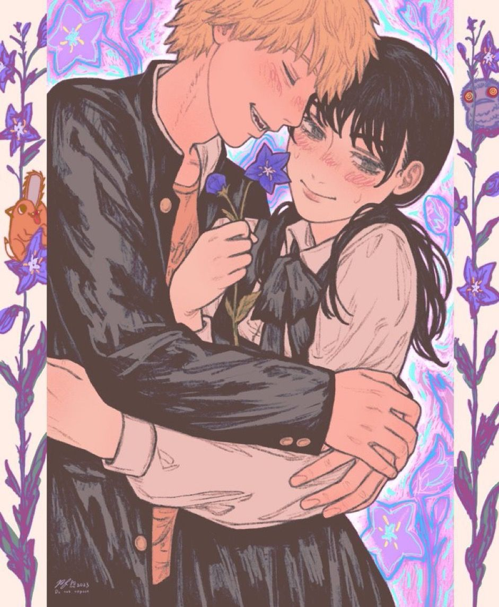

Un cuento sobre Asa y Denji

Había una vez, en un reino lleno de jardines de colores y cielos suaves como algodón, una princesa llamada Asa. No le gustaban mucho las coronas ni las reglas estrictas; prefería correr entre las flores, ensuciarse las manos con tierra y reír tan fuerte que el eco llegaba hasta las torres más altas del castillo.
Todos decían que Asa era una princesa “poco normal”… pero también que hacía que el reino se sintiera más vivo.

Un día, el rey anunció que llegaría un nuevo caballero al castillo. Todos esperaban a alguien elegante, fuerte y serio. Pero cuando Denji apareció… tropezó con la alfombra roja y cayó justo frente a Asa.
Hubo un silencio… y luego Asa empezó a reír.
Desde ese momento, algo cambió.
En lugar de practicar batallas o patrullar el castillo, Denji comenzó a pasar tiempo con Asa. Juntos exploraban rincones secretos del jardín, inventaban juegos absurdos y compartían dulces que “tomaban prestados” de la cocina.

A veces simplemente se sentaban bajo un árbol y miraban las nubes.
Y ambos terminaban riendo sin parar.
Con el tiempo, el castillo empezó a llenarse de esas risas. Los sirvientes sonreían más, los guardias se relajaban… y hasta el viento parecía soplar más suave cuando ellos estaban juntos.

Una tarde, el cielo se pintó de tonos rosados y dorados. Asa y Denji estaban acostados sobre el césped, mirando cómo el sol se escondía.
El corazón de Asa dio un pequeño salto, como si también quisiera reír. Sus mejillas se volvieron rosadas, pero no apartó la mirada.
Asa asintió y, sin pensarlo mucho, tomó su mano.
En ese momento, una suave brisa movió las flores a su alrededor, como si todo el jardín celebrara en silencio.
Desde ese día, ya no eran solo una princesa y un caballero.
Eran dos personas que se cuidaban, se hacían reír y convertían los días simples en recuerdos brillantes.
Y así, entre juegos, atardeceres y dulces compartidos, Asa y Denji descubrieron algo muy especial:
que el amor más bonito no es el que aparece en grandes historias…
sino el que nace en los pequeños momentos, cuando alguien te hace sentir feliz solo por estar a tu lado.
Creado y desarrolado por © Janet :3